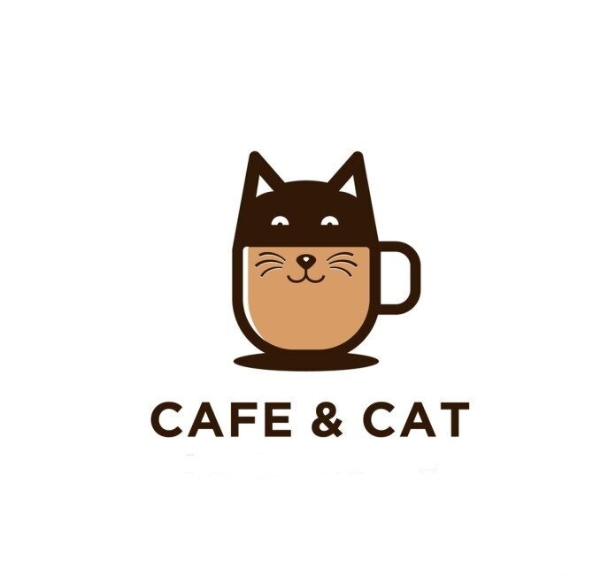

Bem-Vindo ao Meow Cat Cafe
Café que faz o coração ronronar!
O conceito de cat cafe surgiu em Taiwan, e hoje é sucesso no Japão, tornando-se cada vez mais popular pelo mundo. Um cat cafe é um ambiente em que você pode passar seu tempo unindo o prazer de tomar um bom café com a experiência de estar ao lado e interagir com os bichanos.
Faça seu pedido!
